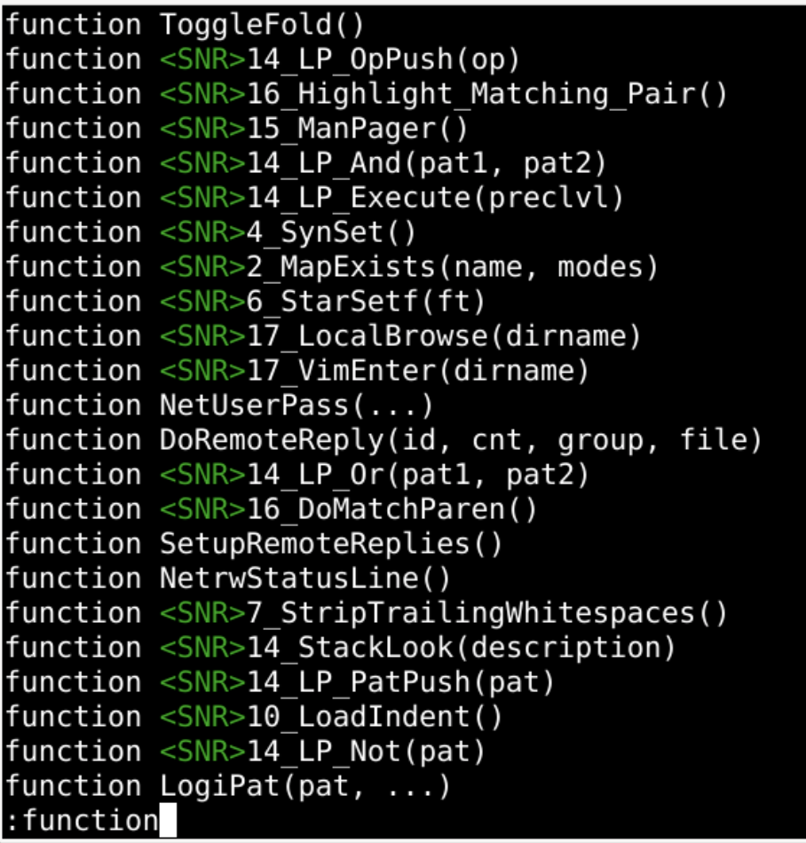
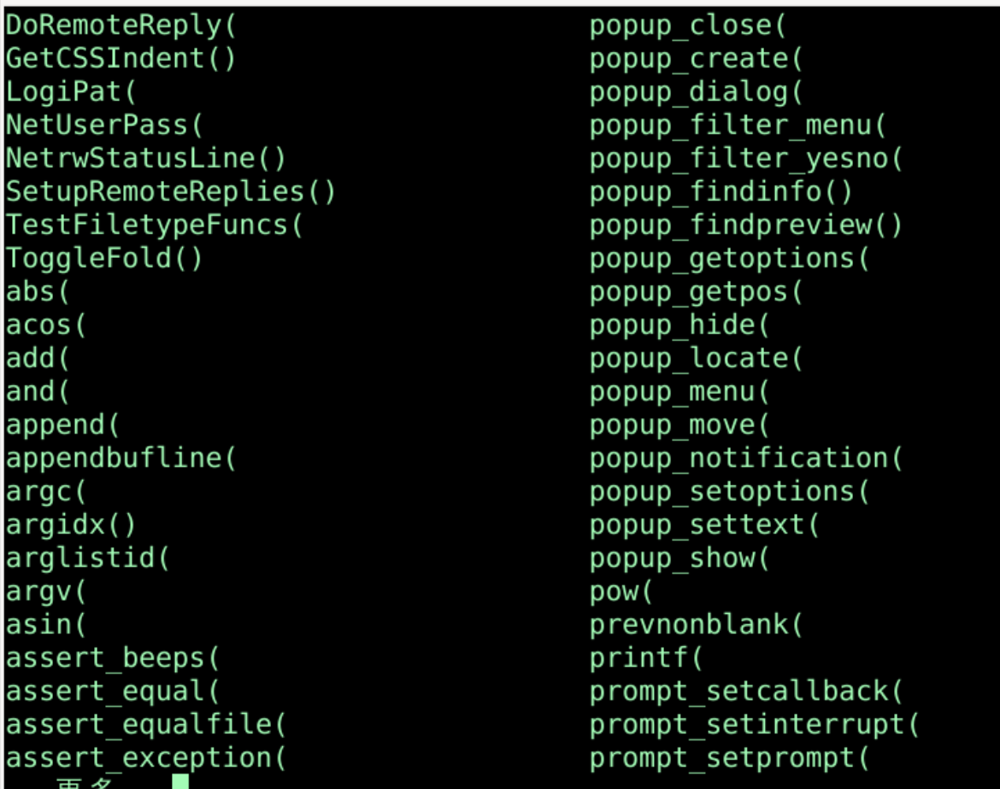
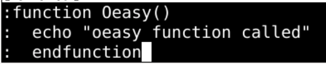
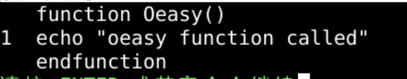
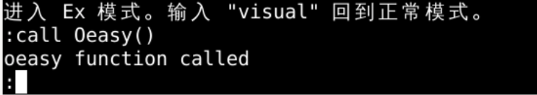
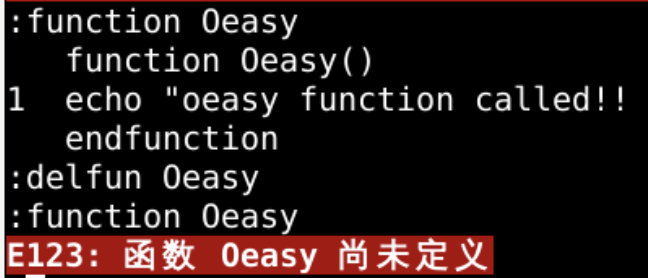
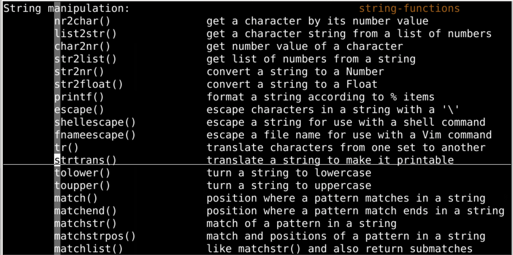
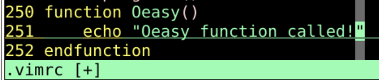
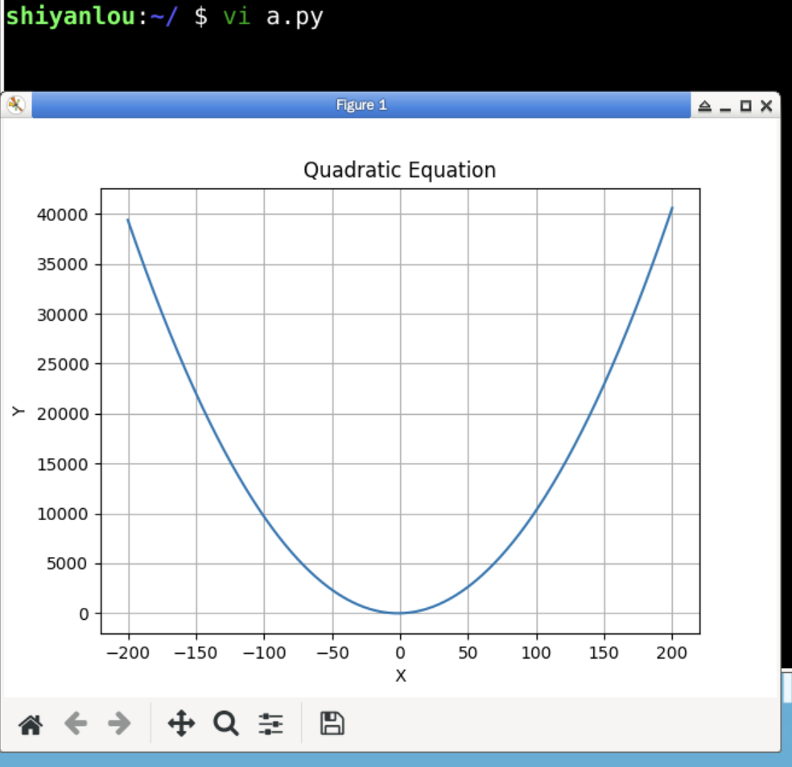

qa 开始录制宏q 结束录制宏@a 应用宏qA 追加录制宏:function 可以看到目前已有的函数
:call tab
function 么:function Oeasy()echo "oeasy function called!!!!"endfunction
:function Oeasy
:call Oeasy()
:delfun Oeasy

:h 查函数细节:h nr2char()~/.vimrc中写下这个函数
:call Oeasy()map <F5> :call Runcode()<CR>
func! Runcode()
exec "w&!python3 %"
endfunc

函数function，我们回忆一下函数function 往 buffuer 里面写点东西